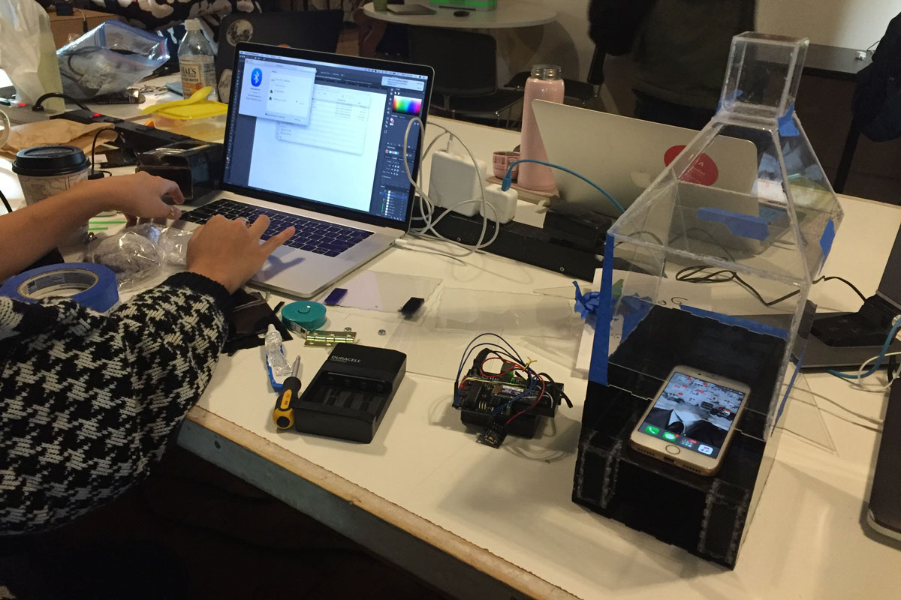
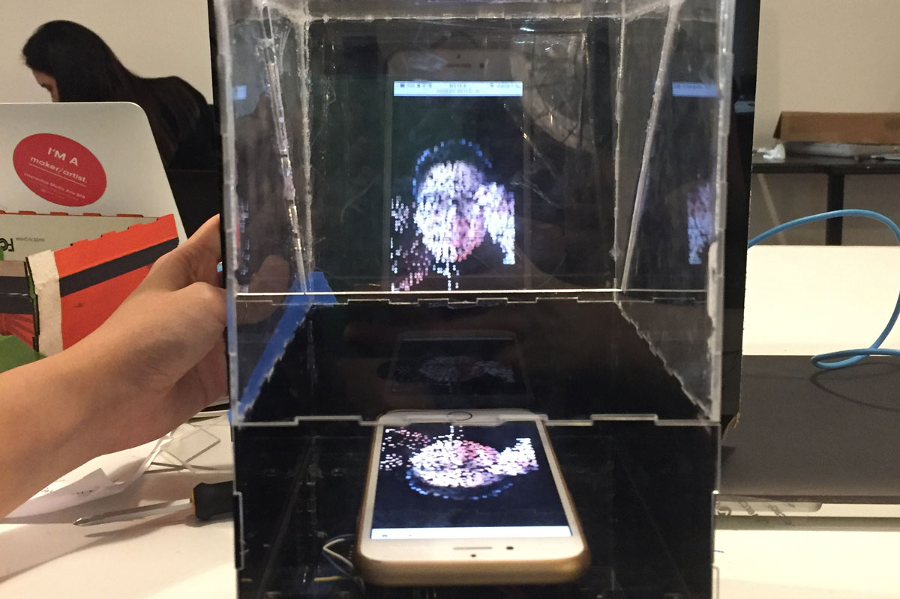

Week 7: Trapped Souls [Midterm Project]
Oct 24, 2018
In collaboration with Becca Moore, we created Trapped Souls, as per described in the project proposal.
We had a clear idea of what our visuals to be displayed using the Pepper's Ghost mechanism would look like. The visuals were created by loading pixels of images in png format and iterated through the pixels (initially in increments of 5 pixels, later in 12 pixels -- reason for this will be explained further in this project documentation) to generate Particle objects wherever the pixel had a color value. Some physics functions were added to the Particle object, such as force (wind), friction, attraction and restitution. What was to be controlled using the inputs of the 3-axis accelerometer were the amount of wind in x and y position and the scale of the whole canvas using the z position. The wind in x and y direction are used to disturb the original location of the particle objects as the physical object gets moved around and the scale is used to create an effect of the visuals zooming in and out as it tilts back and forth. After creating the visuals, we needed to see the numbers received from the accelerometer to be able to constrain and map the values appropriately to match the wind direction and amount.
A basic Arduino code was created by using the Seeed studio's ADXL345 accelerometer library and Serial printing the x, y, z and acceleration x, y z values to be communicated to the p5 sketch via p5.SerialPort application / library created by Shawn Van Every.

Above image is how the visuals were controlled after basic mapping, with no constraining of the values received from Arduino. At this point, serial communication from the Arduino was done via the USB cable. In hindsight, I think we could also have constrained the values on the Arduino side before the values for serial communicated over to p5, but I don't know how much difference it would have made in terms of latency. As for ease of coding, I think sending raw values from the accelerometer to be visible on the p5 sketch and the javascript console window was very helpful as the values could be monitored in more or less real time to be applied to manipulating the particle visuals.

While I was coding the visuals, Becca worked on creating the first prototype of the physical object that would create the hologram using the Pepper's Ghost mechanism. She was able to create a prototype out of paper and a CD case that acted as an excellent reflective surface. It also had the perfect dimensions for creating the maximum size hologram for a phone screen, which is why we ended up using almost the exact dimensions of it for our final product.

We did some tests with our working code running on our mobile phone placed inside of the prototype that Becca made. The accelerometer and the Arduino were not placed inside of the prototype yet for the ease of controlling the accelerometer and also because the prototype seemed not as rigid as we would like it to be to be picked up and moved around. To project our p5 sketch on our phone, all we had to do was to simply refer to the ip address shown on the p5.SerialPort application when creating the SerialPort object on the p5 sketch. This is when I realized that the number of particles that ran smoothly on the web browser of a computer was too much for a mobile phone to render. Originally, the particles were generated by iterating through the colored pixels with a 5 pixel increment per for-loop. This rendered on average of 8000 particles, which was apparently too much as they also had constant vector functions that ran for each particle per frame. We had to experiment with what would be the "perfect number" for the images to still maintain enough fidality to be recognizable as different faces while not being too computationally heavy. 12 increments happened to be sufficient to keep the images detailed enough without too many frame drops (it still is not as real time as it could be).
In terms of the physical structure, as we were happy with the overall dimensions of the prototype, we decided to laser cut. We used the Maker Case website to generate the basic designs of our boxes with finger joints. Before we cut on our acrylic sheets, we decided to do a test print on cardboard to see if our designs would actually assemble.

Our print of the first iteration of laser cut design showed us that we had made a critical mistake. Because we wanted to generate the two separate casings, one for the hologram, and another for the electronic compontents to give us room to move around the electronics in and out, the finger joints of the two casings did not match.
We had to manually fix the joints to make sure that they would all fit on top of each other as a one whole connected piece. It was not as easy as we thought it would be as the material thickness had to always be taken into account, and as we were using the 1.5mm thin acrylic sheets, if we had forgotten to change the material thickness on the Maker Case website, the generated finger joints would be too deep, and would extrude.

Here is the point where we decided to make our electronic components "wireless" by using the Adafruit EZ-Link bluetooth module and a battery pack. We also needed to organize the wiring and the position of the accelerometer carefully so that everything is secured in place to not move around while the structure is being moved around by the users as well as to get the most accurate / reliable readings from the accelerometer. Velcros came to rescue. It allowed us to fasten the electronic components in place, while not having to permanently attach them to the structure. We also used velcros to secure the side door of the structure for us to access the electronics when necessary.
Connecting the Arduino to the EZ-Link Bluetooth module was not as difficult as I thought. We simply had to connect via bluetooth on our computer, then connect to the bluetooth connection on the p5.SerialPort application. The wiring of the EZ-Link Bluetooth module was also not as hard as I thought. The Adafruit's tutorial on the module was very well explained. This is where I decided that I wanted to try out the Adafruit Feather 32u4 board, as according to the product website, it had a microcontroller as well as a bluetooth unit. It sounded like it would allow us to make the structure less clunky. After spending hours on trying to get the feather board to work with the p5.SerialPort, I failed to get the Bluetooth to show up as available serial communication device. This is when we decided to set aside using the feather board and decided to continue using the EZ-Link module with the Arduino.
After getting the Bluetooth serial communication to send 3-axis accelerometer data via serial communication, then displaying the p5 sketch by specifying the ip address, we continued to work with the physical structure to create the hologram effect. The angle of the reflective panel and the distance from the phone to the panel were the two important factors to get the hologram to look as "upright" and floating in mid air. At this point, the edges of the phone are not covered so you see the white boarders of the phone reflected on the acrylic as well.

After the overall physical structure and the code was in place, we started getting some user feedback from fellow students and Danny. Based on the feedback we decided to make some adjustments to our project. The biggest visual change that we made was to lose the bottle shape. A lot of the feedback that we constantly got from our user testings was that the shape that we had created with the intention of making it look like a bottle ended up looking more like a house. Using rubbing alcohol and careful box cutter scoring, we were able to remove the top part.
We also finished up covering up the front acrylic with black matte paper. We also decided to cover up the two sides with black matte paper as well to help the hologram appear more visibly. Danny also had a good suggestion about putting a piece of paper with an illustration of a scene on the back side of the structure, to give the maximum clear view of the hologram as well as to play with the juxtapositioning of the hologram and the imagery, but for this iteration of the project, we decided to leave the context / placement of the hologram more open ended. We decided to leave the hologram more as a "floating ghost". Above is a photo of the finished structure.
Another feedback that we got was that there was no clear feedback to the user that they were making some sort of "progress" by tilting around the hologram. To give the users more feedback that there shakes were helping the trapped souls escape out of the box, we thought that it would be effective to add audio feedback. We found "ghostly" sounds on freesound.org, then decided to map the volume of two sounds according to the amount of horizontal and vertical wind amount. Another shorter "ghost sigh" sound would be triggered as the ghost escapes out of the box. One thing to note is that I discovered that stopping and playing audio files on mobile doesn't work because with the recent developments of autoplay being blocked on most web browsers (and more stricter on mobile), once an audio file is stopped, it cannot be played again without asking the user to "interact" with the website. As a solution, wherever we wanted the sound to "stop", we made the volume of the audio file to 0, so technically all 3 sound files are constantly looped during the entire duration of the website running.
Lessons learned: (taken from Becca's documentation)
- needing to lower the particle amount in the vfx, to allow the graphics on the phone to be smoother (quicker processing time)
- trying to make a trapezoidal shape for our original design idea
- how to hide the smartphone enough so that the pepper’s ghost reflection was the focal point
- creating an affirmative response for the user (decided on sound)
- remembering that sound is only button/touch activated on mobile devices, and how to program around that for a solution
Ideas for future iterations: (taken from Becca's documentation)
Utilizing full capacity of Pepper’s Ghost effect - Taking Danny’s advice into the next iteration, thinking about how to utilize the full pepper’s ghost ability. Right now we are using it to create a “ghostly” transparent image, where the real world acts as the backdrop it floats around on. However, that’s only utilizing really 50% of its ability.
What happens if we create more of a set for it? It’s interesting in that due to the angle of the acrylic pane, the floating face looks like its inside whatever image is behind it (example a black piece of paper – it almost looked like the floating face was layered *behind* the paper. Will take some pictures to help illustrate soon.
Also we realize Pepper’s Ghost is really meant to be seen from one angle? if we tried the Pepper’s Cone technique, maybe we could have it seen from all angles – but may experience increased difficulty in hiding the tech.
Code:
Please visit the project's Github Repo for the p5 and Arduino code used for this project.
Summary of Project Features:
- Physical Design:
- Cases generated with Maker Case and refined manually
- Laser cut using black and clear 1.5mm acrylic sheets
- Acrylic glue used to permanently seal some edges and velcro for removable components
- Hardware:
- Arduino, Adafruit EZ-Link Bluetooth module, ADXL345 3-axis accelerometer, 4 AA battery pack
- Values from accelerometer serial communicated via bluetooth
- Visuals:
- libraries used: p5, p5.sound and p5.SerialPort
- Particles generated via loadPixel() and for-loop iterations with 12 pixel increments
- Nature of Code style vector physics calculations: acceleration, friction, restitution, attraction (to the particles initial position and when "escaped" to the direction of tilt), wind (x, y directions)
- Volume map according to x and y wind amount and volume trigger when particles have "escaped"
Project Video Documentation:
Visual Effect Documentation: